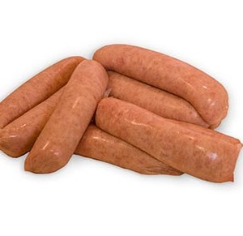
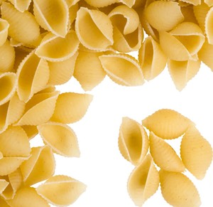
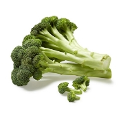
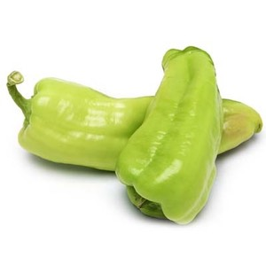
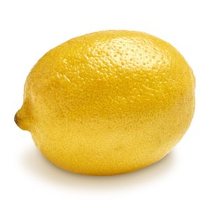
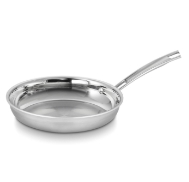
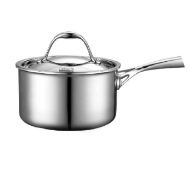

Ingredients
- 
- 
- 
- 


- 
Equipment
-

-

-

-

Bring a pot of salted water to a boil.

Cut Brocolli into florets, peel and slice the non-woody parts of the stem, Slice onion (1/2 per person), Slice cubanelle pepper (1/2 per person), mince garlic (2 cloves per person), Cut lemon into quarters.

Preheat a large saute pan over high heat, add 2 tablespoons of cooking oil and the broccoli to the pan. Sear the broccoli until it begins to brown, don't shake or move the pan to allow for color to develop

Once the broccoli is roasted, add the onion and pepper to the pan, season with salt and saute until tender

Add the garlic to the pan, saute until fragrant

Add 2 cups of water to the pan and bring to a simmer

While the vegetables cook preheat a small saute pan over medium heat, add 1 tablespoon of cooking oil and sear the sausages on both sides

Place the sausage in the oven to finish cooking for another 5min, remove from the oven, slice and set aside

While the sausage cooks, add the pasta to the boiling water and cook until tender

Drain the pasta through a colander, add to the pan with the vegetables and continue cooking until there's no water remaing

When ready, add the sliced sausage and lemon juice to the pan and toss to combine, serve and enjoy!